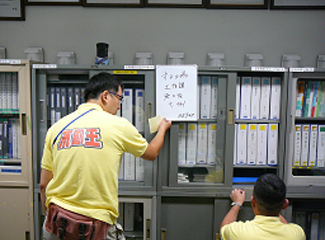
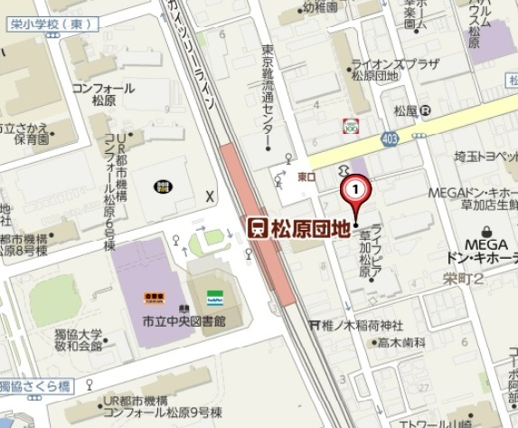
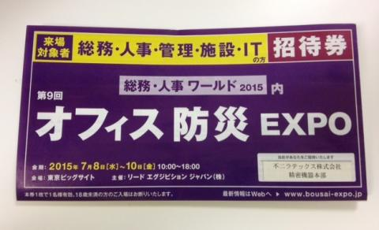
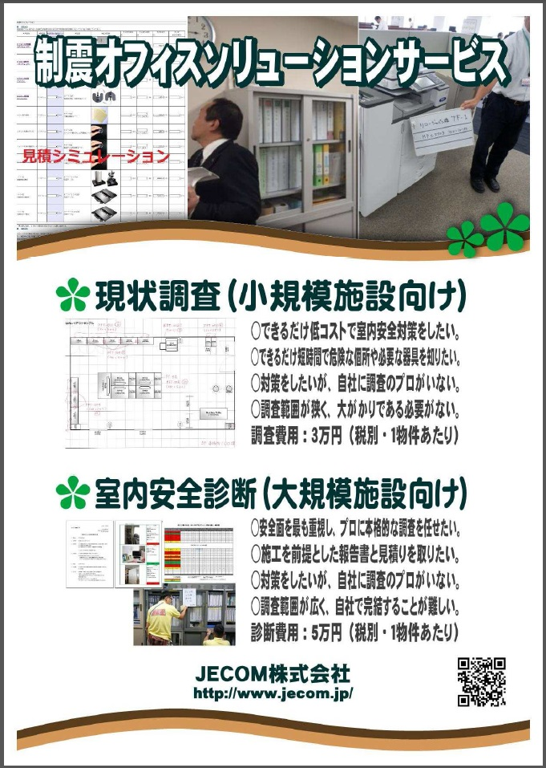
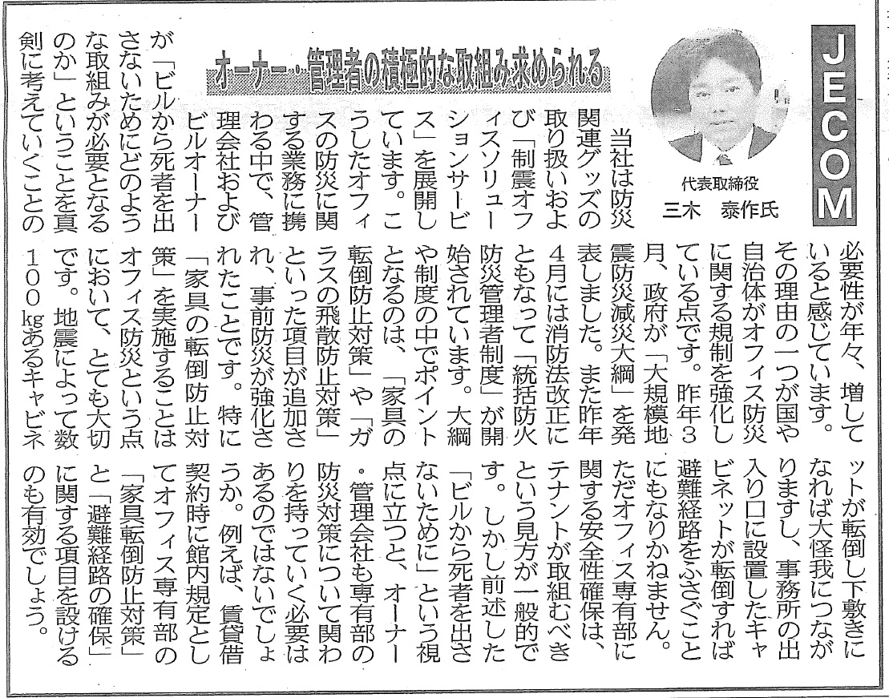
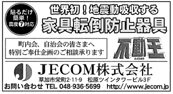

2025/11/17企業向け安全対策製品「KTTシリーズ」新展開のお知らせ
平素より弊社製品をご利用いただき、誠にありがとうございます。
2025/03/03価格改定のお知らせ
2025年4月1日より下記、製品の価格改定をいたします。
お取引先各位には誠にご迷惑をおかけいたしますが、何卒ご理解賜りますとともに今後とも変わらぬご愛顧を賜りますようお願い申し上げます。
＜改定日＞
2025年4月1日受注分より
＜対象製品＞
・7年保存水 500ml（24本入り）/ 1.5L（8本入り）/ 2L（6本入り）
・7年保存3日分保存食セット Completed Ver1 ブルー箱
・7年保存アレルギー対応3日分保存食セット Completed Ver2 ピンク箱
・Completed Evo 7-years パープル箱
・Completed Beyond オペラピンク箱
・Completed Beyond-s オペラピンク箱
・Completed Ver1 1Day Plus グリーン箱
・Completed Ver2 1Day Plus イエロー箱
・7年保存おかずセット Hot9
・7年保存アレルギー対応 車載備蓄セット Driver’s Guardian クーラーボックスS
・7年保存車載備蓄オールインワンセット Driver’s Guardian Evo クーラーボックスL
＜価格について＞
各商品ページに記載いたします。
2024/12/12「消臭防災トイレ30回分セット」の廃番および販売終了について
下記製品につきまして、誠に恐縮ではございますが廃番および販売終了とさせていただ
2024/12/02年末年始休業のお知らせ
誠に勝手なお願いではございますが、年末年始につきましては、下記の通り休業とさせていただきますので、何卒ご理解とご協力を賜りますようお願い申し上げます。
休業期間：令和6年12月28日（土）～ 令和7年1月5日（日）
※ 年末年始休業直前のご注文は、納期の希望に添えない場合がございますのでお早めにお願い致します。
特に大口のご注文は、別途余裕を持って事前にご連絡下さいますよう何卒宜しくお願い致します。
2024/07/10夏季休業日のお知らせ
盛夏の候、貴社ますますご清栄のこととお慶び申し上げます。
2024/04/08ゴールデンウィーク休業のお知らせ
さて、誠に勝手ながら、弊社では本年度のゴールデンウィーク休業日を下記の日程とさせて頂きます。
何かとご不便をおかけいたしますが、何卒ご了承くださいますようお願い申し上げます。
今後とも一層のお引き立てを賜りますよう宜しくお願い申し上げます。
敬具
記
弊社休業日 2024年4月27日（土）～5月6日（月）
以上
2024/01/24新製品リリースならびに廃番製品のお知らせ
拝啓 平素より格別のご高配を賜り、厚くお礼申し上げます。
2023/07/24夏季休業日のお知らせ
拝啓 平素は格別のお引き立てを賜り有り難く御礼申し上げます。
さて、誠に勝手ながら、弊社では本年度の夏季休業日を下記の日程で実施させて頂きますので、
何卒ご了承くださいますようお願い申し上げます。
敬具
記
夏季休業日 2023年8月11日（金）～8月16日（水）
※ 夏季休業直前のご注文は、納期の希望に添えない場合がございますのでお早めにお願い致します。
特に大口のご注文は、別途余裕を持って事前にご連絡を下さいますよう何卒宜しくお願い致します。
2023/01/31【注意喚起】弊社を名乗った偽物サイトにご注意ください
当店とは一切の関わりはございません。
偽サイトの多くは、代金振込後も商品が届かない、など手口が共通しています。
お買い物の際には、十分にご注意下さい。
2022/08/10再エネ電力供給証明書を取得しました。
2022/07/29夏季休業日のお知らせ
拝啓 平素は格別のお引き立てを賜り有り難く御礼申し上げます。
さて、誠に勝手ながら、弊社では本年度の夏季休業日を下記の日程で実施させて頂きますので、
何卒ご了承くださいますようお願い申し上げます。
敬具
記
夏季休業日 2022年8月11日（木）～8月16日（火）
※ 夏季休業直前のご注文は、納期の希望に添えない場合がございますのでお早めにお願い致します。
特に大口のご注文は、別途余裕を持って事前にご連絡を下さいますよう何卒宜しくお願い致します。
2021/08/02製品販売終了のお知らせ
このたび、3日間保存食セット
・Cube-7 years S４
・Cube-10 Years D4
につきまして、2021年8月末をもって販売を終了とさせていただきます。
今後ともThe Next Decade 製品をご愛顧賜りますようお願い申し上げます。
2021/07/14夏季休業日のお知らせ
拝啓 平素は格別のお引き立てを賜り有り難く御礼申し上げます。
さて、誠に勝手ながら、弊社では本年度の夏季休業日を下記の日程で実施させて頂きますので、
何卒ご了承くださいますようお願い申し上げます。
敬具
記
夏季休業日 2021年8月7日（土）～8月15日（日）
※ 夏季休業直前のご注文は、納期の希望に添えない場合がございますのでお早めにお願い致します。
特に大口のご注文は、別途余裕を持って事前にご連絡を下さいますよう何卒宜しくお願い致します。
2021/01/08【重要】緊急事態宣言に伴う当社の対応について（2/2一部改訂）
平素は格別のお引き立てをいただき、厚くお礼申し上げます。
2021年1月8日(金) ～ 3月7日(日)※（予定）
大変ご不便をおかけいたしますが、何卒ご理解賜りますようお願い申し上げます。
2020/07/16【新商品情報】ウェイトバッグ発売のお知らせ
強風対策、ウェイトが必要な時に水のう袋5枚入りの『ウェイトバッグ 水のう君Ⅱ 5枚入り」を発売いたしました。
ウェイトバッグ 水のう君Ⅱ 5枚入（商品ページにリンクします）
2020/07/10【新商品情報】水のう君Ⅱ 1mセット発売のお知らせ
水害対策用品「水のう君Ⅱ」シリーズに1ｍセットが発売となりました。
水のう君1.8ｍが水納袋及び保護用土のう袋が各30枚入り、止水クッションが2000㎜なのに対して、
1ｍセットでは水納袋及び保護用土のう袋が各10枚入り、止水クッションが1000㎜となります。
コンクリートとアスファルトの都市部は、ゲリラ豪雨等によって排水不良になる可能性があります。土のうの手配が難しい地域、低地で排水の悪い場所では備蓄性の良い「水のう袋」が役立ちます。
ご家庭や職場の水害対策に是非導入をご検討ください。
水のう君Ⅱ 1.8ｍセット（商品ページにリンクします）
http://www.jecom.jp/shouhinn/jecomselect/sunoukun2.html
【新商品】水のう君Ⅱ 1セット（商品ページにリンクします）
2020/06/18【新商品情報】飛沫防止パネル発売のお知らせ
感染症予防対策として、新たに「飛沫防止パネル」の取り扱いを開始しました。
新型コロナウイルスの主な感染経路は、飛沫感染と接触感染だと考えられています。
この飛沫感染を防ぐための手段として飛沫防止パネルを導入してみませんか？
透明度が高く、圧迫感を感じにくい素材を使用しており、アクリルと透明PETの2種類からお選びいただけます。
飛沫防止パネル 透明PET／アクリル（商品ページにリンクします）
http://www.jecom.jp/untitled2/shouhinn/jecomselect/acrylicplate.html
2020/05/04【重要】緊急事態宣言延長に伴う当社の対応について
2020年5月5日(火) ～ 5月31日(水)
大変ご不便をおかけいたしますが、何卒ご理解賜りますようお願い申し上げます。
【重要】緊急事態宣言延長に伴う当社の対応について
2020年5月5日(火) ～ 5月31日(水)
大変ご不便をおかけいたしますが、何卒ご理解賜りますようお願い申し上げます。
2020/04/08ゴールデンウィーク休業のお知らせ
さて、誠に勝手ながら、弊社では本年度のゴールデンウィーク休業日を下記の日程とさせて頂きます。
何かとご不便をおかけいたしますが、何卒ご了承くださいますようお願い申し上げます。
今後とも一層のお引き立てを賜りますよう宜しくお願い申し上げます。
記
弊社休業日 2020年5月1日（金）～5月6日（水）
2020/04/08【重要】緊急事態宣言に伴う当社の対応について
2020年4月8日(水) ～ 5月6日(水)（予定）
大変ご不便をおかけいたしますが、何卒ご理解賜りますようお願い申し上げます。
2020/04/01【新商品情報】水のう君Ⅱ発売のお知らせ
2020年4月より、水害対策用品「水のう君Ⅱ」が発売となりました。
コンクリートとアスファルトの都市部は、ゲリラ豪雨等によって排水不良になる可能性があります。土のうの手配が難しい地域、低地で排水の悪い場所では備蓄性の良い「水のう袋」が役立ちます。
ご家庭や職場の水害対策に是非導入をご検討ください。
水のう君Ⅱ（商品ページにリンクします）
2019/12/06年末年始休業のお知らせ
平素は格別のお引き立てを賜り有難くお礼申し上げます。
誠に勝手なお願いではございますが、年末年始につきましては、下記の通り休業とさせていただきますので、何卒ご理解とご協力を賜りますようお願い申し上げます。
休業期間：令和1年12月28日（土）～ 令和2年1月5日（日）
※ 年末年始休業直前のご注文は、納期の希望に添えない場合がございますのでお早めにお願い致します。
特に大口のご注文は、別途余裕を持って事前にご連絡下さいますよう何卒宜しくお願い致します。
2019/09/1610月以降の消費税について
弊社取り扱い商品の非常食セットについて、消費税は下記の通りとなります。
◆ 標準税率10％が適用になる商品
車載用セット 10年保存1人用・10年保存2人用
7年保存1人用・7年保存2人用・ドライバーズガーディアン
◆軽減税率8％が適用になる商品
The Next Dekade 10年保存水・10年保存クッキー
The Next Dekade 7年保存水・7年保存クッキー・7年保存米粉クッキー・7年保存パン・7年保存レトルト食品
The Next Dekade 10年保存Cube-セット・7年保存Cube-セット
7年保存Completedセット・7年保存Completed Ver.2セット
◆送料につきましては、標準税率10％が適用になります。
弊社会計は納品時計上のため、2019年10月1日納品分より新税率を適用させていただきます。
その他ご不明な商品は弊社までお問合せください。
2019/08/01【重要】KTTユーザー登録サーバーメンテナンス終了のお知らせ
ご登録を予定されていたお客様にはご不便をおかけして大変申し訳ございませんでした。
今後ともよろしくお願いいたします。
2019/07/19夏季休業日のお知らせ
拝啓 平素は格別のお引き立てを賜り有り難く御礼申し上げます。
さて、誠に勝手ながら、弊社では本年度の夏季休業日を下記の日程で実施させて頂きますので、
何卒ご了承くださいますようお願い申し上げます。
敬具
記
夏季休業日 2019年8月10日（土）～8月18日（日）
※ 夏季休業直前のご注文は、納期の希望に添えない場合がございますのでお早めにお願い致します。
特に大口のご注文は、別途余裕を持って事前にご連絡を下さいますよう何卒宜しくお願い致します。
2019/07/05【重要】KTTユーザー登録一時停止（サーバーメンテナンスの為）
KTTユーザー登録サーバー入れ替え・メンテナンス作業のため、暫くの間登録を一時停止させて頂いております。
お客様にはご不便をおかけして申し訳ございませんが、復旧後にご登録をいただくか、弊社宛にメール（info@jecom.co.jp）で下記登録情報をお送りいただけますようお願い申し上げます。
【お客様登録情報】
・製品番号（ユーザー登録シールに記載の11桁の英数字）※
全数お書きいいただければと思いますが、多すぎる場合は型番と数量をご記載ください。
・会社名（フリガナも）※
・支店名
・郵便番号※
・住所※
・電話番号※
・メールアドレス※
・部署
・担当者※
・ご購入販売店※
・ご購入販売店の担当者
・購入日※
※は必須項目です。
2019/04/082019年度ゴールデンウイーク休業期間について
拝啓 日頃よりご愛顧を賜り、厚く御礼申し上げます。
下記の期間、弊社はゴールデンウイーク休業とさせていただきます。
新天皇の即位に伴い、2019年に限り、ゴールデンウイーク休業期間が例年より長期に渡ります。
ご相談・ご注文は早めにお願い致します。
今後とも弊社ご愛顧の程、よろしくお願い申し上げます。
敬具
記
ゴールデンウィーク休業期間：2019年4月27日（土）～2019年5月6日（月）
5月7日（火）より、通常営業致します。
2018/12/03年末年始休業のお知らせ
平素は格別のお引き立てを賜り有難くお礼申し上げます。
誠に勝手なお願いではございますが、年末年始につきましては、下記の通り休業とさせていただきますので、何卒ご理解とご協力を賜りますようお願い申し上げます。
休業期間：平成３０年１２月２９日（土）～ 平成３１年１月６日（日）
※ 年内納品をご希望の場合は、１２月２１日（金）ＡＭまでにお願い致します。
特に大口のご注文は、別途余裕を持って事前にご連絡下さいますよう何卒宜しくお願い致します。
2018/08/02【新商品情報】7年保存米粉クッキー発売のお知らせ
2018/07/25夏季休業日のお知らせ
平素は格別のお引き立てを賜り有り難く御礼申し上げます。
さて、誠に勝手ながら、弊社では本年度の夏季休業日を下記の日程で実施させて頂きますので、
何卒ご了承くださいますようお願い申し上げます。
猛暑厳しき折、くれぐれもご自愛のほどお祈り申し上げます。
敬具
記
夏季休業日 8月11日（土）から8月19日（日）
※ 夏季休業直前のご注文は、納期の希望に添えない場合がございますのでお早めにお願い致します。
特に大口のご注文は、別途余裕を持って事前にご連絡を下さいますよう何卒宜しくお願い致します。
2018/04/01室内菌無クリーンスプレー 販売終了のお知らせ
このたび「室内菌無クリーンスプレー」につきまして、需要の継続的な減少に伴い提供が困難となりました為、販売を終了させていただきます。
誠に勝手ではございますが、何卒事情をご賢察の上、ご容赦賜りますようお願い申し上げます。
商 品 名 ： 室内菌無クリーンスプレー300ml（JANコード 4582183620139）
販売終了期日：2018年4月30日
2017/12/09年末年始休業のお知らせ
拝啓 貴社益々ご隆昌のこととお慶び申し上げます。
平素は格別のお引き立てを賜り有難くお礼申し上げます。
誠に勝手なお願いではございますが、年末年始につきましては、下記の通り休業とさせていただきますので、
何卒ご理解とご協力を賜りますようお願い申し上げます。
敬具
記
休業期間：平成２９年１２月２９日（金）～平成３０年１月４日（木）
※ 年末休業直前のご注文は、納期の希望に添えない場合がございますのでお早めにお願い致します。
特に大口のご注文は、別途余裕を持って事前にご連絡下さいますよう何卒宜しくお願い致します。
１月５日（金）注文分は最短で１月９日（火）からの出荷となります。
2017/07/18夏季休業日のお知らせ
平素は格別のお引き立てを賜り有り難く御礼申し上げます。
さて、誠に勝手ながら、弊社では本年度の夏季休業日を下記の日程で実施させて頂きますので、
何卒ご了承くださいますようお願い申し上げます。
敬具
記
夏季休業日 8月11日（金）から8月20日（日）
※ 夏季休業直前のご注文は、納期の希望に添えない場合がございますのでお早めにお願い致します。
特に大口のご注文は、別途余裕を持って事前にご連絡を下さいますよう何卒宜しくお願い致します。
2017/06/28【展示会情報】オフィス防災EXPO2017のお知らせ
今年も家具転倒防止器具 不動王のメーカーである不二ラテックス㈱が
東京ビッグサイトで行われるオフィス防災EXPOに出展します。
６月に発売したばかりの「サイドストッカー用 転倒防止器具」も展示されます。
皆様、是非お立ち寄りください。
■開催日時
2017年7月26日（水）～28日（金） 10：00～18：00
■場所
東京ビッグサイト 不二ラテックス㈱社ブース
■展示会名称
第11回 オフィス防災EXPO
■主な来場対象者
総務・防災担当者の方々
■出展内容
家具転倒防止器具「不動王」シリーズ
皆様のご来場を心よりお待ちしております。
2017/03/21Ｍonthly Magazine 総集編をアップしました。
リコージャパン株式会社で毎月発行しているMonthly Magazineに、昨年4月より1年間、弊社が担当をさせて頂いた防災コラムの総集編が発刊されましたので、お知らせ致します。
減災対策や啓発活動にお役立て頂ければ幸いです。
Monthly Magazine2016の総集編はこちら
asset/00032/blog/Monthly Magazine Ver1.0 2016.pdf
サイドメニューバーからもアクセスすることができます。
2017/02/24３月納品希望のお客様へ
平素は格別のお引き立てを賜り有り難く御礼申し上げます。
只今、３月納品に向けて注文が増えており、商品によりご希望に添えない場合がございます。
納期のご確認とお早目の発注をお願い致します。
2017/02/017年・10年保存食・水セットの販売を開始しました。
2016/12/08年末年始休業のお知らせ
拝啓 貴社益々ご隆昌のこととお慶び申し上げます。
平素は格別のお引き立てを賜り有難くお礼申し上げます。
誠に勝手なお願いではございますが、年末年始につきましては、
下記の通り休業とさせていただきますので、何卒ご理解とご協力を賜りますようお願い申し上げます。
敬具
記
休業期間：平成２８年１２月２８日（水）～ 平成２９年１月４日（水）
年内納品をご希望の場合は12月21日午前中までにご注文下さい。
１月５日（木）注文分は１月６日（金）以降の出荷となりますので、ご注文はお早めにお願い致します。
特に数量の多いご注文に関しましては、余裕を持って事前にご連絡を下さいますよう宜しくお願い申し上げます。
2016/07/26夏季休業日のお知らせ
平素は格別のお引き立てを賜り有り難く御礼申し上げます。
さて、誠に勝手ながら、弊社では本年度の夏期休業日を下記の日程で実施させて頂きますので、
何卒ご了承くださいますようお願い申し上げます。
敬具
記
夏期休業日 8月11日（木）から8月17日（水）
※ ご注文は8月10日（月）12時までにお願致します。
※ 連休後の出荷開始は8月18日（木）となります。
※ 大口のご注文は、別途余裕を持って事前にご連絡を下さいますよう何卒宜しくお願い致します。
2016/07/12【募集】制震オフィス 施工代理店を募集致します。
この度、「制震オフィス」へのお問い合わせが増えており、お客様のニーズにお応えするため、施工に関して全国で対応できる体制を急速に進めております。
つきましては、全国で施工代理店を募集致しますので、ご希望の方、ご興味をお持ちの方はこちらのお問い合わせフォームより、内容に「施工代理店募集について」と記載して、お問い合わせください。
現在、募集中の地域は、北海道、東北、北陸、中国地方、四国、沖縄です。
それ以外の地域でもご相談ください。
皆様のご応募お待ちしております。

2016/07/05【展示会情報】オフィス防災EXPO2016のお知らせ
今年も不二ラテックス㈱が東京ビッグサイトで行われる
オフィス防災EXPOに出展することになりました！
■開催日時
2016年7月13日（水）～15日（金） 10：00～18：00
■場所
東京ビッグサイト 不二ラテックス㈱ブース
■展示会名称
第10回 オフィス防災EXPO
■主な来場対象者
総務・防災担当者の方々
■出展内容
家具転倒防止器具「不動王」シリーズ
皆様のご来場を心よりお待ちしております。
2015/11/16本社移転のお知らせ
平素はひとかたならぬご厚情にあずかり、厚く御礼申し上げます。
さて、このたび弊社は下記のとおり本社を移転することとなりましたのでご案内申し上げます。
これを機に、より一層社業に励み努力いたす所存でございますので、
今後ともより一層のご支援、ご指導のほどお願い申し上げます。
記
業務開始日 平成２７年１１月２４日（火）
所在地 〒３４０－００１１
埼玉県草加市栄町２－１１―３－２０３
電話番号 ０４８－９３６－５６９９（変更無）
ＦＡＸ番号 ０４８－９３６－５６９３（変更無）

2015/07/24夏季休業日のお知らせ
平素は格別のお引き立てを賜り有難くお礼申し上げます。
本年度の夏季休業につきまして、下記の日程で実施させて頂きますので、
何卒ご理解とご協力を賜りますようお願い申し上げます。
敬具
記
休業期間：平成２7年８月１１日（火）～ ８月１６日（日）
※ご注文は８月１０日（月）１２時までにお願い致します。
※連休後の出荷開始は８月１７日（月）となります。
※大口のご注文は、別途余裕を持って事前にご連絡を下さいます
よう何卒宜しくお願い致します。
2015/06/12【展示会情報】オフィス防災EXPO2015のお知らせ
今年も不二ラテックス㈱が東京ビッグサイトで行われる
オフィス防災EXPOに出展することになりました！
■開催日時
2015年7月8日（水）～10日（金） 10：00～18：00
■場所
東京ビッグサイト 不二ラテックス㈱ブース
■展示会名称
第9回 オフィス防災EXPO
■主な来場対象者
総務・管理・施設・ＩＴの方々
■出展内容
家具転倒防止器具「不動王」シリーズ
ＴＨＫ社製 免震テーブル（ＴＳＤ型）
皆様のご来場を心よりお待ちしております。

2015/06/10販売代理店および施工代理店募集のお知らせ
近年、火山活動や地震の発生が増加するなか、大手企業と制震オフィス化の展開をスタートさせました。
期間限定で販売代理店と施工代理店を広く募集致します。詳細に関する問い合わせは下記まで。
締切日は、平成27年7月15日です。
【お問い合わせ】 ＪＥＣＯＭ（株）
本社住所：草加市栄町２－１１－９
電話 ：０４８－９３６－５６９９
メール：info@jecom.co.jp
「ビジネスパートナー募集」ボタンをクリックしていただくか、電話またはメールでもお問い合わせを受け付けております。
2015/04/07オフィスの現状調査・室内安全診断をご活用下さい。
新年度がスタートして、今年度の予算に「防災・減災」に関する費用が組まれている企業の皆様、室内の安全対策にかかる費用を調べてみませんか？
防災士の資格を持ったプロがお伺いし、室内の安全対策が必要な場所をレポートにまとめます。
施工を行った場合の御見積も一緒にご提出致しますので、費用を把握することができます。
詳しくはサイト内「現状調査・室内安全診断」http://www.jecom.jp/chosa_sindan.htmlをご覧下さい。

2015/04/01「制震オフィス」一般社団法人 産業人材研修センター様の施工例を掲載しました。
室内安全診断から施工をお申込みされた例として、
一般社団法人 産業人材研修センター様の事例をサイト内にアップしました。
http://www.jecom.jp/chousa_sindan_ex.html
2015/03/25ビル経営新聞掲載のお知らせ
３月９日付のビル経営新聞に弊社代表取締役のインタビュー記事が掲載されました。

過去の掲載記事につきましてはこちらをご覧下さい。
ＪＥＣＯＭ株式会社 業務担当のブログ「ビル経営新聞に社長コメントが掲載されました。」(2014年4月11日)
https://bizmail.itp.ne.jp/blg/news.php?account_id=jecomgyoumu&blog_news_id=22369&preview=1
2015/02/18一部商品価格改定のお知らせ
一部商品価格の参考上代が変更となりましたので、お知らせ致します。
詳細はこちらをご覧下さい。
2015/02/01一部商品の包装及び品番が変更となりました。
掲載中の一部商品について、品番と包装が変更となりましたので、お知らせ致します。
【対象商品】
・サニタクリーン からだふきボディタオル
・サニタクリーン 防災ウェットタオル
【品番】
≪変更前≫
・サニタクリーン からだふきボディタオル 0102021
・サニタクリーン 防災ウェットタオル 01020AS-01
≪変更後≫
・サニタクリーン からだふきボディタオル ＢＷ-580
・サニタクリーン 防災ウェットタオル 01020AS-02
【包装】
≪変更箇所≫
二重包装となっていた外側の透明なパッケージがなくなり、商品自体にヘッダーがつきました。
2014/12/04年末年始休業のお知らせ
平素は格別のお引き立てを賜り有難くお礼申し上げます。
年末年始につきまして、下記の通り休業とさせていただきますので、
何卒ご理解とご協力を賜りますようお願い申し上げます。
敬具
記
休業期間：平成２６年１２月２７日（土）～ 平成２7年１月４日（日）
尚、１２月２６日（金）注文分は、翌年の出荷、１月５日（月）注文分は
１月６日（火）以降の出荷となりますので、ご注文はお早めにお願い致します。
特に数量の多いご注文に関しましては、余裕を持って事前にご連絡を下さいます
よう宜しくお願い申し上げます。
2014/10/01埼玉県のチャレンジ経営宣言登録企業として登録されました。
2014/09/01埼玉新聞掲載のお知らせ（8月29日付）
９月１日付の埼玉新聞の防災特集で、広告を掲載致しました。
皆様からのお問い合わせをお待ちしております。
